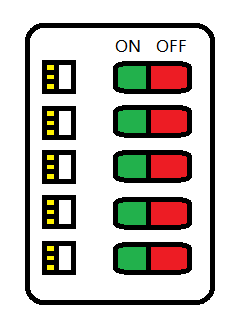

命令模式（Command）
将“请求”封装成对象，以便使用不同的请求，队列或日志来参数化其他对象。命令模式也支持可撤销的操作。
栗子
现在有个万能遥控器，它有五个插槽和五对开关按钮。每个插槽可以插一张存储卡，存储卡里面存的是可以控制的某个电器代码，对应的开关按钮可以控制某个电器开关。（听起来这个遥控器有点奇怪是不是？你把它想像成小霸王游戏机就可以了）

你的任务就是给遥控器上的这些开关按钮编程，让它们可以使用存储卡存的电器命令进而控制电器。
下面是其中一些存储卡的代码：
1 | // 灯 |
当然现在的遥控器雏形还比较简单，只能用到开关命令，但是以后还会升级、增加更多按钮让它可以把那些控制命令都用上，需要控制的电器也会越来越多。
如何满足需求
在这里，遥控器是“动作的请求者”，而那些“动作的执行者”就是存储卡上的电器对象。遥控器不需要知道这些电器对象是怎么执行的开关操作，只需要执行调用它们的命令就行了。
上面这句话有点绕口，用宏命令来解释就是：虽然上面的存储卡代码很简单，开关只有一个 on 和 off 方法，但不是所有电器都封装的这么完美。有些电器的开关操作可能很复杂（厂家没封装好，或者为了更开放），比如先打开风扇电源，再打开主机电源，可能需要一系列操作才能“开启”，而命令模式可以把这些都封装在“开启”这个执行方法中，我们只要点击这个开启，就会完成这一系列已经设置好的操作。
命令接口
1 | interface Command { |
一个打开灯的命令
1 | class LightOnCommand implements Command { |
可以控制电器的简单遥控器
这里为了方便说明，先把五个插槽简略成了一个，按钮的按下动作也被简略成了开关按钮中的一个。
（完全版本就是把 Command slot 改成 Command[] slot 数组形式，这里就不实现了）
1 | class SimpleRemoteControl { |
模拟遥控器按下按钮
1 | public static void main(String[] args) { |
队列请求
假设有一个工作队列：你控制一端，线程控制另一端。你控制的一端可以添加命令，线程控制的一端则进行这样的动作：从队列取出一个命令，调用它的 execute 方法，等待这个调用完成，然后将该命令丢弃，再取出下一个命令……
工作队列类和进行计算的对象之间是完全解耦的，此刻线程可能在进行财务计算，下一刻可能就在读取网络数据。工作队列不在乎到底做什么，怎么做，它们只知道取出命令对象，然后调用它的 execute 方法。
日志请求
类似宏命令，每次执行某一个命令后，下一步就是 store 保存这些命令操作日志，也就是操作点，这样可以在系统出问题时，方便我们查找操作点。